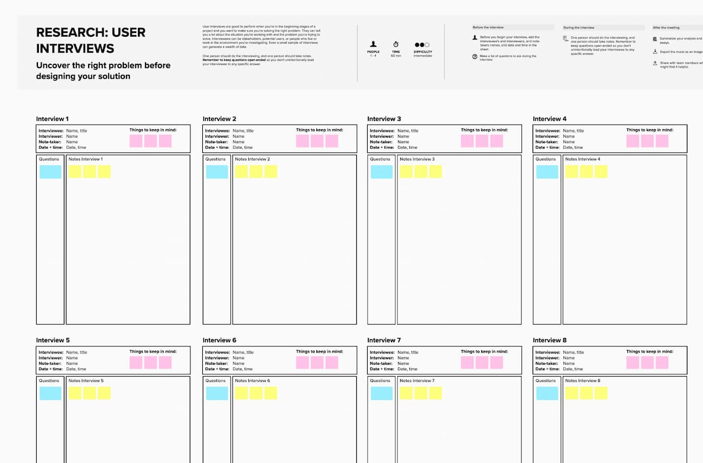

- 30 Minute Interviews
- Delved into employee’s history and background at the company.
- Asked about software that is integral to their job.
- Asked about the frequency of usage and their familiarity with the Helix website.
- Sought suggestions on how to enhance Helix’s usability and benefits.